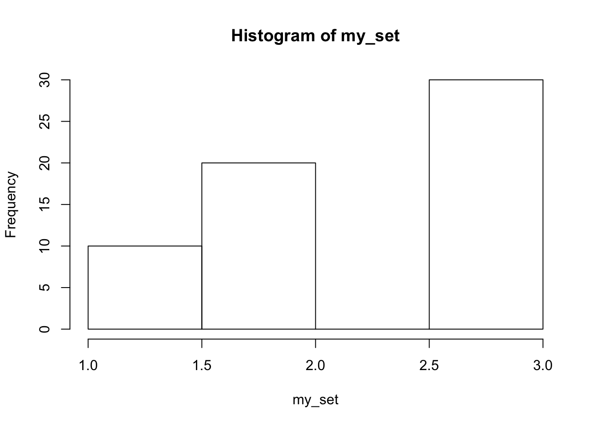

Chapter 7 Lab 7: t-test (Independent Sample)
This lab is modified and extended from Open Stats Labs. Thanks to Open Stats Labs (Dr. Kevin P. McIntyre) for their fantastic work.
7.1 Do you come across as smarter when people read what you say or hear what you say?
7.1.1 STUDY DESCRIPTION
Imagine you were a job candidate trying to pitch your skills to a potential employer. Would you be more likely to get the job after giving a short speech describing your skills, or after writing a short speech and having a potential employer read those words? That was the question raised by Schroeder and Epley (2015).The authors predicted that a person’s speech (i.e., vocal tone, cadence, and pitch) communicates information about their intellect better than their written words (even if they are the same words as in the speech).
To examine this possibility, the authors randomly assigned 39 professional recruiters for Fortune 500 companies to one of two conditions. In the audio condition, participants listened to audio recordings of a job candidate’s spoken job pitch. In the transcript condition, participants read a transcription of the job candidate’s pitch. After hearing or reading the pitch, the participants rated the job candidates on three dimensions: intelligence, competence, and thoughtfulness. These ratings were then averaged to create a single measure of the job candidate’s intellect, with higher scores indicating the recruiters rated the candidates as higher in intellect. The participants also rated their overall impression of the job candidate (a composite of two items measuring positive and negative impressions). Finally, the participants indicated how likely they would be to recommend hiring the job candidate (0 - not at all likely, 10 - extremely likely).
What happened? Did the recruiters think job applicants were smarter when they read the transcripts, or when the heard the applicants speak? We have the data, we can find out.
7.2 Lab skills learned
- Conduct independent samples t-tests
- Generate figures
- Discuss the results and implications
7.3 Important Stuff
- citation: Schroeder, J., & Epley, N. (2015). The sound of intellect: Speech reveals a thoughtful mind, increasing a job candidate’s appeal. Psychological Science, 26, 877-891.
- Link to .pdf of article
- Data in .csv format
- Data in SPSS format
7.4 R
7.4.1 Load the data
Remember that any line with a # makes a comment and the code does not run. Below is how to load the .csv data from the online repository, or from a local file (you need to change the file path to where the local file is, if you downloaded it). The data contains all of the measures and conditions from Experiment 4.
library(data.table)
# load from github repo
#all_data <- fread("https://raw.githubusercontent.com/CrumpLab/statisticsLab/master/data/SchroederEpley2015data.csv")
all_data <- fread("Data/SchroederEpley2015data.csv") # load from file on computer7.4.2 Inspect data frame
This will give you a big picture of the data frame. Click the button to view it in your browser, then take a look to see what is in it.
library(summarytools)
view(dfSummary(all_data))7.4.3 Find the data you need
This time the data comes prefiltered for us. The authors ran lots of experiments, but we only have the data from Experiment 4. This is great, we don’t need to subset the data frame to find all of the data that we need. But, we do still need to understand what data we want to analyze. Let’s start with identify the column that codes the experimental conditions for whether or not the evaluator read a transcript or heard the interview.
7.4.3.1 Condition variable
Lucky for us, the condition variable is called CONDITION! Let’s take a look. We printed it out just by writing down all_data$CONDITION. There 0s and 1s for each condition (audio vs. transcript). But which one is which? This isn’t clear from the data, and it isn’t clear from the paper, or from the repository. We have to do some guess work. I went ahead and computed the means for the Intellect_rating between each condition, and then compared those to the graph in the paper for E4. It looks like 1 = audio condition, and 0 = transcript condition.
all_data$CONDITION## [1] 1 1 1 0 0 0 1 0 1 0 0 1 1 0 0 1 1 1 0 0 0 0 0 1 1 1 0 1 1 1 0 0 1 1 0
## [36] 1 0 1 1aggregate(Intellect_Rating~CONDITION,all_data,mean)## CONDITION Intellect_Rating
## 1 0 3.648148
## 2 1 5.634921Let’s use words instead of 0s and 1s to refer to our experimental conditions. To do this, we will chance the values of 0 and 1, to the words transcript and audio. We can do this in two steps. First we convert the CONDITION column to a factor. This will automatically turn the 0s and 1s into strings (not numbers, text). Factors have an internal variable for the names of the levels, which will be 0 and 1. We can simply change the level names to transcript and audio.
all_data$CONDITION <- as.factor(all_data$CONDITION)
levels(all_data$CONDITION) <- c("transcript","audio")Now if you look at the all_data variable, you will see the words transcript and audio, where 0s and 1s used to be.
7.4.3.2 Dependent Measures
Next it’s time to find the depende measure columns. The graph from the paper shows three different measures in each condition. These included Intellect, General Impression, and Hiring Likelihood. Every evaluator (either given a transcript or audio recording of the interview) gave ratings on a scale of 1 to 10 for each of those concepts. It’s not immediately clear which columns in all_data correspond to those three measures. There are lots of different measures that could be the ones they reported. It turns out the relevant ones are called
Intellect_RatingImpression_RatingHire_Rating
In this tutorial we are going to walk through doing an independent samples t-test for the first measure, Intellect_Rating. You can follow these same steps to complete the same kind of t-test for the other two variables.
7.4.4 Look at the dependent variable.
Question: Why do we always want to look at the data?
What is the first thing we do before even considering an inferential test? Look at the data. Always look at the data. We could make a dot plot or histogram of the data from the Intellect_ratings. But, from our last lab we already learned how to make graphs showing most of the information we would want to look at. For example, we could make a bar graph that has the means for each condition (transcript vs. audio), standard errors of the mean and the actual scores as little dots. This would be great to look at it. Not only will it tell us if there are really weird numbers in the data (who knows maybe the data file is corrupted, you need to look), it will also give us strong intuitions about what to expect for the t-test.
We can plot each score as a dot using the all_data dataframe. If we want to add on a layer for the sample means, and for the sample standard errors, we have to compute those and put them in a new dataframe first. Then we use both dataframes with ggplot to plot all of the information.
We will use dplyr to quickly get the means and the standard errors and put them in a new data frame called decriptive_df.
library(dplyr)
library(ggplot2)
# get means and SEs
descriptive_df <- all_data %>%
group_by(CONDITION) %>%
summarise(means= mean(Intellect_Rating),
SEs = sd(Intellect_Rating)/sqrt(length(Intellect_Rating)))
# Make the plot
ggplot(descriptive_df, aes(x=CONDITION, y=means))+
geom_bar(stat="identity", aes(fill=CONDITION))+ # add means
geom_errorbar(aes(ymin=means-SEs, # add error bars
ymax=means+SEs), width=.1) +
geom_point(data=all_data, aes(x=CONDITION, y=Intellect_Rating), alpha=.5)+
geom_point(alpha=.25)+
ylab("Rating")
This plot is very useful. First, we can see the numbers in our dependent measure are behaving sensibly. We know that the numbers have to be between 1-10, because those were the only options in the scale. If we found numbers bigger or smaller, we would know something was wrong. Checking for things that are obvsiouly wrong in the data is one reason why we always look at first. We are checking for obvious errors. There are other ways to check to, but looking is fast and easy.
Question: Why are the standard errors of each sample an appropriate thing to use for error bars?
Now that you can see the patterns in the data, you should form an intuition about how the independent samples t-test will turn out. You can see how big the error bars (+1/-1 standard error of each sample man). The t-test will tell us whether the observed difference (or greater) is likely due to chance. Should we find a big t-value or a small t-value? Should we find a big p-value or a small t-value. If you understand how t-values and p-values work, the answer should be very clear from the graph. You should already know how the t-test will turn out before you run it. Running it will confirm what you already suspect to be true.
7.4.5 Conduct Independent samples t-test
Question: Why are we conducting an independent samples t-test, and not a one-sample or paired samples t-test?
We use the very same t.test function that we used last time to conduct a t-test. The only difference is that we don’t tell the R to use a paired sample t-test. We leave the paired=TRUE statment out, and R automatically knows we want to do an independent samples t-test. Remember to set the var.equal=TRUE, otherwise R will compute a different version of the t-test.
You can use different syntax to run the t-test. Because our data is already in a data frame we can use this syntax.
t.test(Intellect_Rating~CONDITION, data=all_data, var.equal=TRUE)##
## Two Sample t-test
##
## data: Intellect_Rating by CONDITION
## t = -3.5259, df = 37, p-value = 0.001144
## alternative hypothesis: true difference in means is not equal to 0
## 95 percent confidence interval:
## -3.1284798 -0.8450652
## sample estimates:
## mean in group transcript mean in group audio
## 3.648148 5.634921The t.test function also will work on two variables, not in a data frame. For example, the following does the same thing. But, it’s harder to read, and the means are described in terms of X and Y, not terms of transcript and audio, like the report above.
t.test(all_data[all_data$CONDITION=='transcript',]$Intellect_Rating,
all_data[all_data$CONDITION=='audio',]$Intellect_Rating,
var.equal=T)##
## Two Sample t-test
##
## data: all_data[all_data$CONDITION == "transcript", ]$Intellect_Rating and all_data[all_data$CONDITION == "audio", ]$Intellect_Rating
## t = -3.5259, df = 37, p-value = 0.001144
## alternative hypothesis: true difference in means is not equal to 0
## 95 percent confidence interval:
## -3.1284798 -0.8450652
## sample estimates:
## mean of x mean of y
## 3.648148 5.634921Question: What conclusions do we draw from the t-test? Based on these results, if you were being evaluated for a job interview, would you rather have the evaluator read a transcript of your interview or listen to an audio recording?
So, now we have the t-test. It shows the t-value, the p-value, and the means for each group. You can double-check with the paper to see if we found the same results as reported by the authors.
7.4.6 Remaining ratings
Now, you should use what you have learned to anlayse the last two ratings for the dependent variables Impression_Rating, and Hire_Rating. Remember to plot the data for each, and conduct a t-test for each. Then compare what you found to the original article. What did you find, and what do the results mean?
7.4.7 Reconstructing the graph from the paper
The results from Experimen4 4 in the paper plot the means and error bars (+1 / -1 SEM) for all three dependent measures, for both experimental conditions. We can do this in ggplot using the data. We will have to make a couple changes to the dataframe. But, it won’t be too hard. What we need to do is make a fully long form data frame. Remember a long form data frame has one row per dependent measure.
The all_data frame is partly long and partly wide. If we are only interested in one dependent measure, then it is a long data frame for that measure. For example, example if we are only interested in plotting Intellect_Rating, then we already have one observation of that dependent measure for each row. But, in the other columns, the dependent measures for Impression_Rating and Hire_Rating are in the same rows.
Before continuing, it is very much worth mentioning that this part of data analysis happens alot, and it is kind of annoying. I call it the rubix cube problem, because we need to “rotate” and transform the format of the data to accomplish different kinds of analysis goals. It’s good to be able to know how to do this. This problem occurs all of the time, can occur for any software package. It’s a good thing you are learning R, because we can do these things easily in R. They are not often so easy to do without a computer programming language like R. The worst thing to do is transform the data by hand. That really sucks. Believe me you don’t want to do it. Why? Because you will make mistakes, and you will mess up the data, then you will mess up your analysis. And, you won’t be able to find your mistakes, and it will take you ages to correct them. That sucks.
There’s more than one way to transform data in R. For example the cast and melt functions do this kind of thing. You can look those up. In this example we will not use those functions. Instead we will show some steps to build the required dataframe one step at a time.
# repeat CONDITION column three times
condition <- rep(all_data$CONDITION,3)
# make a ratings variable with all three ratings in one variable
ratings <- c(all_data$Intellect_Rating,
all_data$Impression_Rating,
all_data$Hire_Rating)
# make a new factor variable with the names of the ratings
# need to repeat each level name the appropriate number of times
num_to_repeat <- length(all_data$CONDITION)
rating_type <- rep(c("Intellect","Impression","Hire"),num_to_repeat)
# put the new variables into a data frame
plot_all <- data.frame(condition,rating_type,ratings)
# Get the means and standard errors for each rating by condition
descriptive_all <- plot_all %>%
group_by(condition,rating_type) %>%
summarise(means= mean(ratings),
SEs = sd(ratings)/sqrt(length(ratings)))
# Make the plot
ggplot(descriptive_all, aes(x=rating_type, y=means, group=condition))+
geom_bar(stat="identity", aes(fill=condition), position='dodge')+
geom_errorbar(aes(ymin=means-SEs,
ymax=means+SEs),
width=.1,
position = position_dodge(width=.9)) +
geom_point(data=plot_all, aes(x=rating_type,
y=ratings,
group=condition),
alpha=.25,
position = position_dodge(width=.9))+
geom_point(alpha=.25)+
ylab("Rating")
Well, we didn’t make the exact graph. We have the bars, the error bars, and we added the individual scores because they are useful to look at. Otherwise, it’s the same graph (except the the ordering of bars is determined alphabetically here. We change that in ggplot, but we won’t do that today.)
7.5 Excel
How to do it in Excel
7.6 SPSS
How to do it in SPSS
7.7 Matlab
How to do it in Matlab